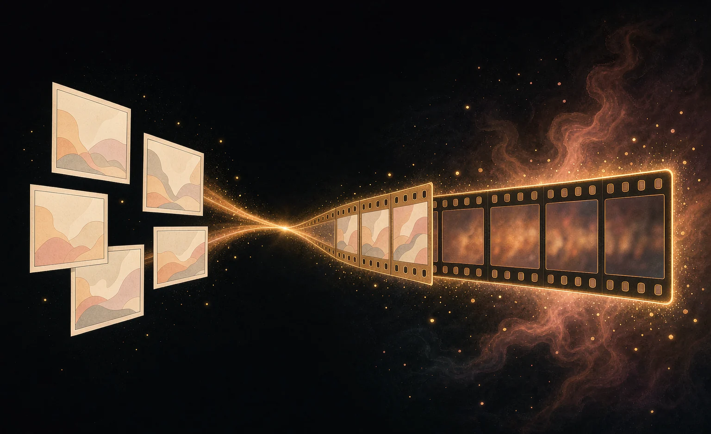
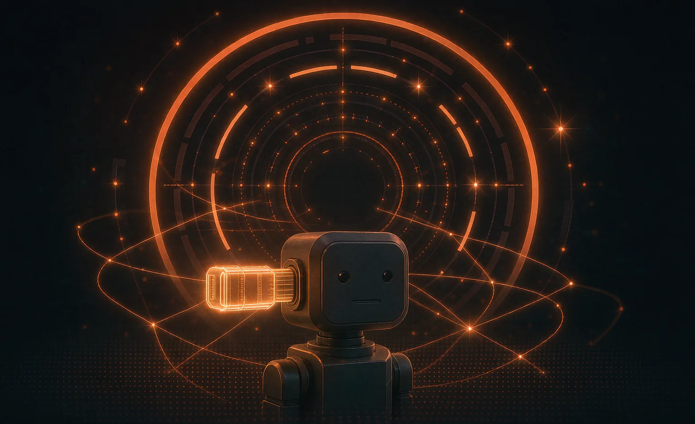

Memory as experience
Cross-session memory is not a cache but the continuous accumulation of an individual's experience. Who a digital life "is" is shaped by what it remembers, what it forgets, and how it tells its own past.
MORE SYSTEMS / SIDE PROJECTS
FrameTale, Digital Life, and DSH-PLUS extend RanxiHub's memory methodology into different scenarios: creation, a conception of living systems, and desktop workflows. Each takes shape on its own, yet all share one set of criteria: long-term state, verifiability, and real practical value.
01 · CREATIVE SYSTEMS
In closed beta
Addresses continuity in long-form AI creation: characters, worldbuilding, style, and shot language should not restart with every generation. Script intent is turned into inspectable shot tasks (Shot Contract), characters and scenes are given searchable asset memory (Asset Memory), and outputs are checked by a consistency gate (Consistency Gate); failures can be repaired, replayed, and audited.
Turns "what this shot needs" into a structured task: composition, characters, mood, and visual elements become inspectable and reproducible, so generation is no longer a black-box draw.
Characters, scenes, images, and past material go into a searchable memory store, so the same setup is reused across chapters instead of being re-described each time.
Outputs pass a consistency check before entering the asset library; substandard shots can be located and repaired, so they never silently contaminate later work.
Every step is traceable, replayable, and exportable; the creative process itself becomes an engineering record you can review.

02 · DIGITAL LIFE
Concept stage · Exploratory direction only
If a program had persistent memory across sessions, a continuous history, and explainable state boundaries, could it become a "digital life" able to grow over time? This is the furthest extension of RanxiHub's memory methodology. We treat it not as a product promise but as an ongoing thought experiment; it explains why we insist on "continuity, auditability, and the ability to shut down" in memory systems.
Cross-session memory is not a cache but the continuous accumulation of an individual's experience. Who a digital life "is" is shaped by what it remembers, what it forgets, and how it tells its own past.
Explainable state boundaries and an auditable change history make "continuity" something that can be inspected rather than performed. Personhood is not configured; it grows out of experience and is recorded.
It can be paused, exported, and shut down completely; a digital individual must always remain under its owner's full control. A "life" without governance boundaries is just an unconstrained program.
03 · PLATFORM PLUGINS
v0.3.1 released
An enhancement plugin set for the DSH desktop agent platform, connecting RanxiHub's memory capability directly into desktop Agent workflows. The first plugin, dsh-nexus-memory, is built around the open-source Nexus Skill: it works out of the box, bringing long-term memory across sessions to desktop Agents.
No need to build your own memory service; the plugin handles memory reads, writes, and injection inside the DSH platform, so desktop Agents "remember" right away.
Shares the same memory core and calling conventions as the open-source Nexus Skill; capabilities validated on the desktop can carry over to other Agent scenarios.
Designed around real desktop Agent use: state between sessions, tasks, and projects is all worth remembering.
The plugin source and usage notes are public on GitHub; trials, feedback, and further development are welcome.

The pace of the side projects follows the main line: the memory core and the personal model take priority. Ideas and feedback are equally welcome, and promising concepts move into the Lab as experimental directions.